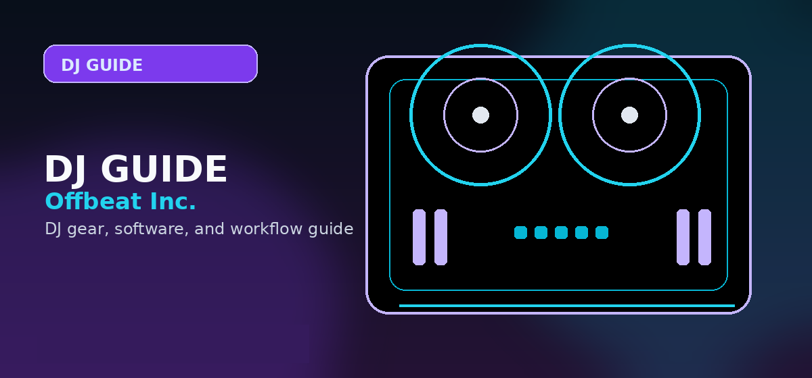

DJ Gear Setup Planner
Pick the right first DJ setup by matching gear to the way you actually want to play: bedroom practice, mobile events, club prep, scratching, or production crossover.

Disclosure: This page links to buying guides that may use affiliate links. We may earn a commission at no extra cost to you. Full disclosure
Most beginner gear mistakes come from buying for the wrong job. Use this planner to choose a setup path first, then compare the exact controller, headphone, speaker, mixer, or turntable category that fits that path.
Choose your DJ setup path
Bedroom beginner
Best for learning beatmatching, phrasing, library prep, and transitions at home without overspending.
- Beginner controller with built-in audio interface
- Closed-back wired headphones
- Laptop with Serato Lite, rekordbox, or Mixxx
- Small powered speakers or studio monitors
- USB cable, RCA/TRS cables, and a simple stand
Mobile/wedding DJ
Best for private events where reliability, announcements, backup audio, and quick setup matter more than club mimicry.
- Controller with microphone input and reliable outputs
- PA speakers or powered tops matched to room size
- Wired headphones plus backup cable
- Music library stored locally, not streaming-only
- Extension cords, table, lighting basics, and emergency adapters
Club/house DJ
Best for DJs aiming at club booths, house parties, b2b sets, or rekordbox/CDJ-style preparation.
- Rekordbox-friendly controller or standalone system
- USB drives prepared with analyzed playlists
- Durable cue headphones
- Practice monitors with enough detail for EQ work
- Library workflow that transfers to CDJs later
Scratching/turntablism
Best for DJs focused on cuts, juggles, DVS, battle routines, and hands-on platter control.
- Turntables or motorized controller
- Scratch mixer or DVS-capable controller
- DJ cartridges, control vinyl, and slipmats
- Low-latency software setup
- Stable stand or table that will not wobble
Producer/DJ hybrid
Best for producers who want to perform edits, loops, stems, samples, or original tracks live.
- Controller with performance pads and flexible software
- Audio interface if production and DJ routing share a laptop
- Studio monitors for production decisions
- MIDI controller for pads, keys, or clips
- Export workflow for edits, stems, and set-ready masters
Fast starter checklist
| Path | Start here | Avoid first | Next guide |
|---|---|---|---|
| Bedroom beginner | Controller, headphones, laptop, small speakers | Expensive CDJ-style rigs | Beginner setup guide |
| Mobile/wedding | Controller with mic input, PA, backup music | Streaming-only libraries | Gear checklist |
| Club/house | rekordbox workflow, USB prep, club-style layout | Gear that cannot export club-ready libraries | Laptop setup guide |
| Scratching | Stable platters, DVS, cartridges, scratch mixer | Loose tables and high-latency routing | Cartridge guide |
| Producer/DJ hybrid | Performance pads, audio interface, monitors | Buying DJ gear before solving production monitoring | Production tools |
Good next reads
Once you know your path, use these pages to compare the actual gear categories.